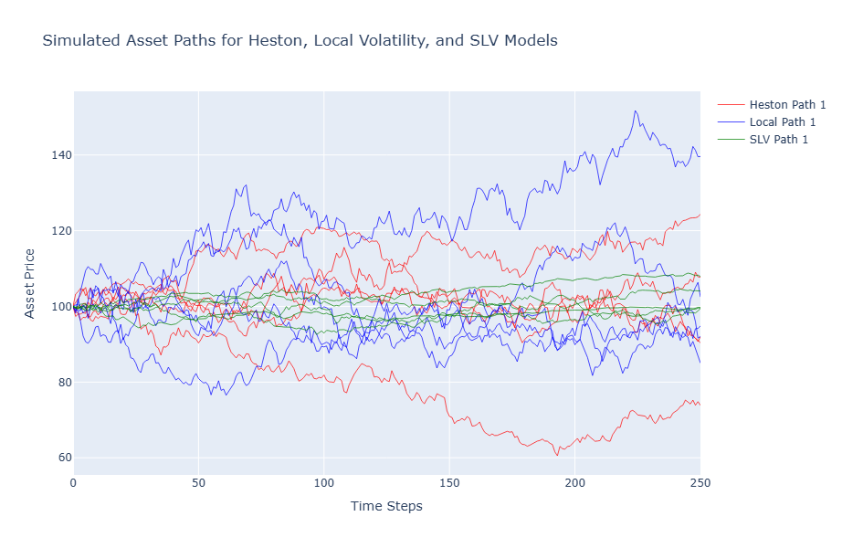

The Heston model is a popular stochastic volatility model used in derivative pricing, particularly for options where implied volatility varies with strike and maturity. It models the underlying asset price and its variance as coupled stochastic processes:
Here, \( S_t \) is the asset price, \( v_t \) the stochastic variance, \( \kappa \) the rate of mean reversion, \( \theta \) the long-run variance, \( \sigma \) the volatility of volatility, and \( \rho \) the correlation between the asset and volatility shocks.
We calibrate the Heston model to market-observed implied volatilities using a non-linear least squares optimization:
where \( \vec{\theta} = (\kappa, \theta, \sigma, v_0, \rho) \) is the parameter vector. The goal is to minimize the squared differences between market and model implied volatilities across a range of strikes and maturities.
After calibration, we analyze the stability of the estimated parameters by perturbing initial conditions and using bootstrapped sub-samples of option chains. The error surface is visualized in 2D and 3D plots to identify local minima and degeneracies in parameter space.
Additionally, we perform out-of-sample backtesting by comparing pricing errors and hedging performance against the Black-Scholes and SABR models:
The Heston model, while computationally intensive, provides superior calibration performance in capturing market volatility structures. It forms the basis for advanced derivative pricing engines and risk-neutral scenario generators in real-time trading systems.
